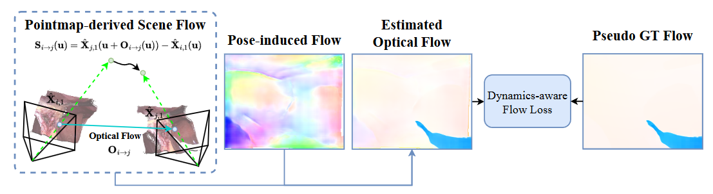

Abstract
Reconstructing 3D scenes from monocular surgical videos can enhance surgeon's perception and therefore plays a vital role in various computer-assisted surgery tasks. However, achieving scale-consistent reconstruction remains an open challenge due to inherent issues in endoscopic videos, such as dynamic deformations and textureless surfaces. Despite recent advances, current methods either rely on calibration or instrument priors to estimate scale, or employ SfM-like multi-stage pipelines, leading to error accumulation and requiring offline optimization. In this paper, we present Endo3R, a unified 3D foundation model for online scale-consistent reconstruction from monocular surgical video, without any priors or extra optimization. Our model unifies the tasks by predicting globally aligned pointmaps, scale-consistent video depths, and camera parameters without any offline optimization. The core contribution of our method is expanding the capability of the recent pairwise reconstruction model to long-term incremental dynamic reconstruction by an uncertainty-aware dual memory mechanism. The mechanism maintains history tokens of both short-term dynamics and long-term spatial consistency. Notably, to tackle the highly dynamic nature of surgical scenes, we measure the uncertainty of tokens via Sampson distance and filter out tokens with high uncertainty. Regarding the scarcity of endoscopic datasets with true depth and camera poses, we further devise a self-supervised mechanism with a novel dynamics-aware flow loss. Abundant experiments on SCARED and Hamlyn datasets demonstrate our superior performance in zero-shot surgical video depth prediction and camera pose estimation with online efficiency. Code will be released.
Given monocular surgical video as input, we present Endo3R a unified 3D surgical foundation model for online scale-consistent reconstruction from monocular endoscopic video without any prior information or extra optimization, predicting globally aligned pointmaps, scale-consistent video depth, camera poses and intrinsics.
Regarding the lack of training datasets, we introduce self-supervised training scheme for data without ground-truth poses and depths. Namely, a dynamics-aware flow loss is designed to enforce the cross-frame temporal consistency.
Fig 1. Qualitative resultsof monocular depth estimation.
Fig 2. Qualitative comparison of novel view synthesis on DL3DV dataset.
Table 1. Quantitative comparison with depth estimation methods.
Table 2. Comparison of Pose Estimation on the SCARED Dataset.
@misc{guo2025endo3r,
title={Endo3R: Unified Online Reconstruction from Dynamic Monocular Endoscopic Video},
author={Jiaxin Guo and Wenzhen Dong and Tianyu Huang and Hao Ding and Ziyi Wang and Haomin Kuang and Qi Dou and Yun-Hui Liu},
year={2025},
eprint={2504.03198},
archivePrefix={arXiv},
primaryClass={cs.CV},
url={https://arxiv.org/abs/2504.03198},
}